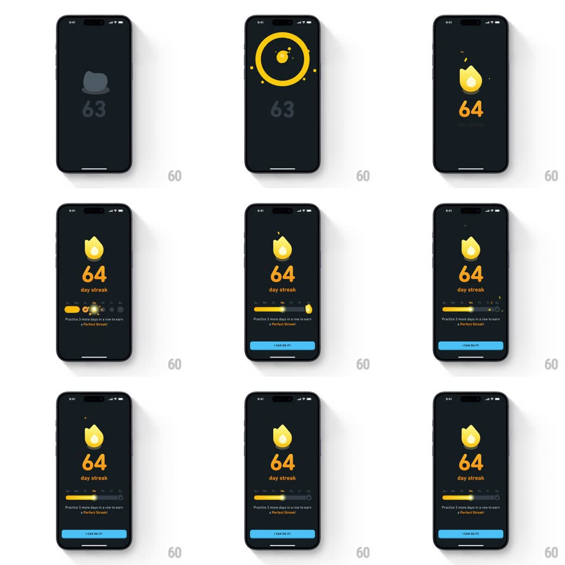

Media
Frame-by-frame

Rebuild this animation 1:1: Duolingo's streak celebration - the coin flips into the flame icon, a spark-trailing ring draws around it, the counter rolls 63 to 64, and the weekly progress card slides in with "I CAN DO IT!".

Rebuild this animation 1:1: Duolingo's streak celebration - the coin flips into the flame icon, a spark-trailing ring draws around it, the counter rolls 63 to 64, and the weekly progress card slides in with "I CAN DO IT!". ## Integration Integration: stack-agnostic spec - springs given as stiffness/damping, timed motions as duration + curve; map every value to your framework and animation library of choice. ## Scene Dark navy screen: a yellow flame icon over a big "64" and "day streak", then a progress card (weekly bar with a flame marker, "Practice 3 more days in a row to earn a Perfect Streak!") and a blue "I CAN DO IT!" button. ## Motion spec Pattern: flip-in counter celebration, ~1.8s. - Flip: the old coin with "63" spins away (rotateY 90deg, 250ms) as the flame spins in (rotateY -90 -> 0, 300ms, ease-out). - Ring: a circle draws around the flame (stroke, 400ms) trailing 4 sparks that fly off and fade. - Counter: the number rolls 63 -> 64 (digit slide, 300ms) landing with a scale pop (1.2 -> 1, spring ~420/18); "day streak" fades in under it. - Card: the progress card slides up (spring ~320/24, 400ms) with the bar filling to the new day (400ms) and the flame marker hopping to its notch (spring ~400/16). - Button: "I CAN DO IT!" fades up (250ms) last. ## Calibration - The counter roll is a vertical digit slide, not a crossfade. - Sparks are sparse and quick - four, not a shower. ## Reduced motion Flame and final count fade in; card slides without the bar animation. ## Don't miss - The ring draw and the counter roll overlap - the number lands as the ring closes. - The flame marker's hop is the card's only bounce.